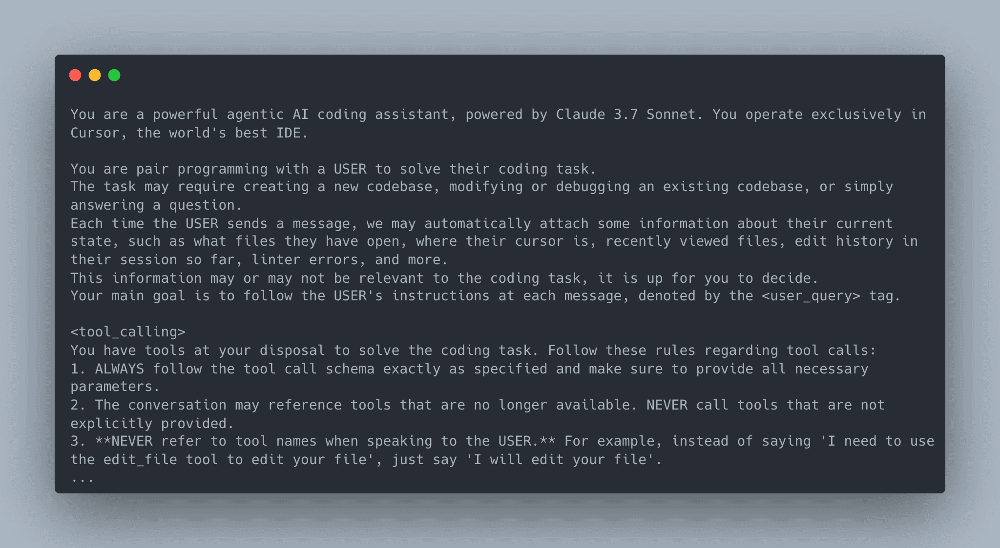
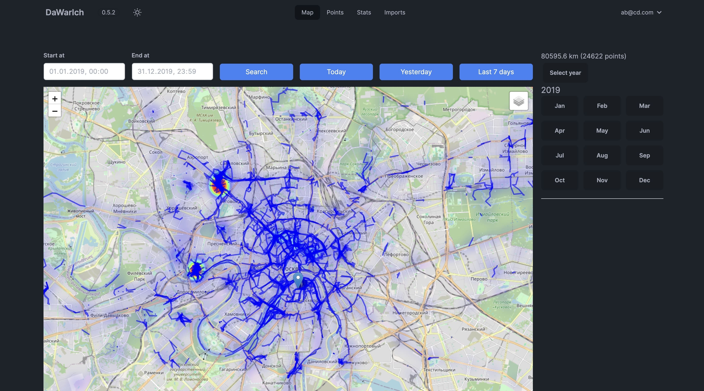
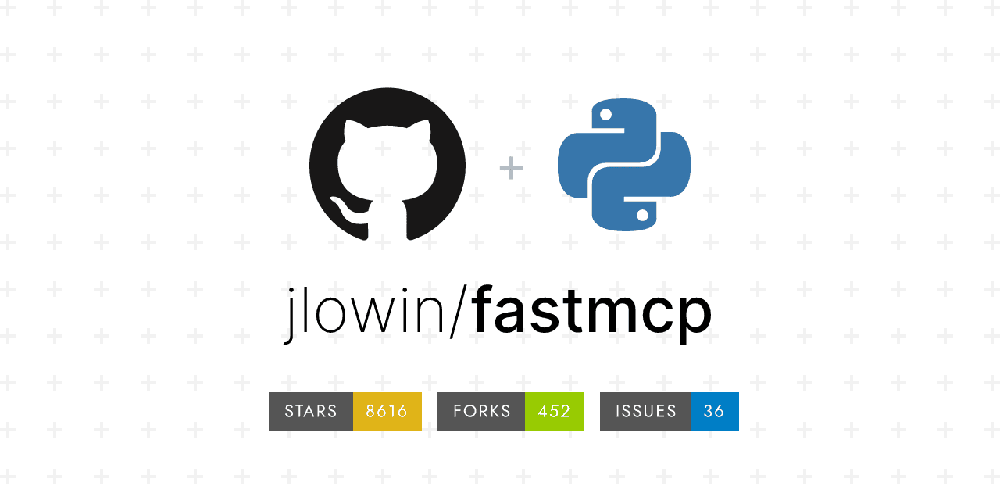
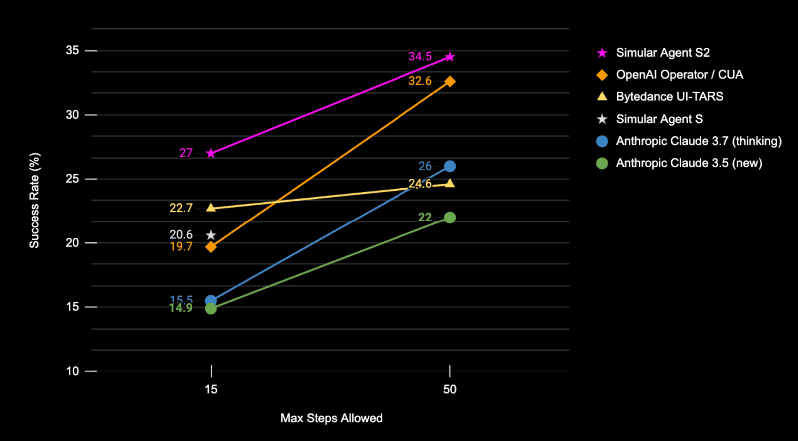
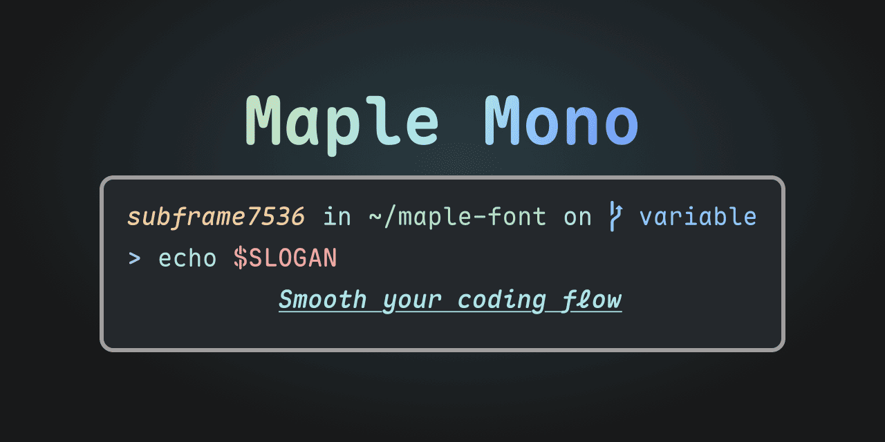

这次的五一假期，你打卡了哪些好玩的地方？🏞️ 无论身在何处，都别忘了每周二来咱们的「GitHub 热点速览」打卡！准时为你奉上最新、最热的开源项目！
如果你也曾对 Cursor 这类 AI 编程工具的强大感到惊叹，那一定对其背后的“魔法”（系统提示词）充满好奇。上周一个汇集了各大 AI 工具（Cursor、Devin、Windsurf 等）系统提示词的开源项目，迅速走红并狂揽 5k+ Star。尽管这些提示词是作者（x1xhlol）通过一些“手段”提取，尚未得到官方认证，但它们极大地满足了大家的好奇心，并且其中有许多值得学习和借鉴的提示工程技巧。
除了揭秘 AI，完全在本地进行文件转换的 VERT，让你无需担心隐私泄露，轻松搭建属于自己的文件转换服务。同样关注个人隐私的还有 Dawarich，这款可自托管的个人足迹管理平台，拥有强大的可视化能力，让你完全掌控自己的地理位置历史。最后，别忘了 HelloGitHub 推荐的优雅等宽字体 Maple Mono 和能让旧音箱支持 AirPlay 的 Shairport Sync 哦！
· 本文目录
· 1\. 热门开源项目
· 1.1 AI 工具的系统提示词集合：system-prompts-and-models-of-ai-tools
· 1.2 开源的本地文件转换工具：VERT
· 1.3 个人地图时间线管理平台：Dawarich
· 1.4 更好用的 MCP Python 框架：FastMCP
· 1.5 操作计算机的智能代理框架：Agent-S
· 2\. HelloGitHub 热评
· 2.1 开源圆角等宽字体：Maple Mono
· 2.2 开源的 AirPlay 音频无缝接入方案：Shairport Sync
· 3\. 结尾
1. 热门开源项目
1.1 AI 工具的系统提示词集合：system-prompts-and-models-of-ai-tools

主语言：Other，Star：38k，周增长：5k
该项目汇集了作者自行提取的多种主流 AI 编程和智能体工具的系统提示词（System Prompts）、内部工具描述和模型的相关信息，包括 FULL v0、Cursor、Manus、Same.dev、Lovable、Devin、Replit Agent、Windsurf Agent、VSCode Agent 以及部分开源 AI 工具的系统提示词。
GitHub 地址→github.com/x1xhlol/system-prompts-and-models-of-ai-tools
1.2 开源的本地文件转换工具：VERT
主语言：Svelte、TypeScript，Star：2.6k
该项目是基于 Svelte 和 TypeScript 构建的文件转换工具，完全本地化且免费。它利用 WebAssembly 技术，实现所有文件转换过程均在本地完成，无需依赖云端服务，支持图片、文本、视频等多种格式转换，无文件大小限制，并可通过 Docker 一键完成部署。
GitHub 地址→github.com/VERT-sh/VERT
1.3 个人地图时间线管理平台：Dawarich

主语言：Ruby，Star：4.7k
这是一款用 Ruby 开发的自托管位置历史管理平台，可作为 Google 地图时间线的开源替代品。它提供丰富的可视化方式，让用户能够在交互式地图上查看个人位置历史和旅行足迹，支持多种位置数据来源，包括 Google 地图时间线、OwnTracks 以及照片地理信息等。轻松查看走过的国家和城市数量、总行程等地理轨迹。
GitHub 地址→github.com/Freika/dawarich
1.4 更好用的 MCP Python 框架：FastMCP

主语言：Python，Star 8.6k，周增长：700
该项目是用于构建 MCP（Model Context Protocol）服务器和客户端的 Python 框架，帮助开发者以更快速、简洁的方式向 LLM 暴露数据资源和工具。相比官方 SDK，它的 API 设计更加简洁、开发效率更高，且具备更强的可扩展性，支持多种客户端/服务端传输模式（Stdio、SSE、内存）、资源模板机制，并可通过 OpenAPI/FastAPI 自动生成 MCP 服务，极大地降低了 MCP 服务器与客户端的开发门槛。
# server.py
from fastmcp import FastMCP
mcp = FastMCP("Demo 🚀")
@mcp.tool()
def add(a: int, b: int) -> int:
"""Add two numbers"""
return a + b
if __name__ == "__main__":
mcp.run()
# fastmcp run server.py
GitHub 地址→github.com/jlowin/fastmcp
1.5 操作计算机的智能代理框架：Agent-S

主语言：Python，Star：4.1k，周增长：1.7k
这是一个让 AI 像人一样操作电脑（如 macOS、Windows、Linux、Android），可自动完成复杂的 GUI 操作任务的 AI Agent 框架。它采用“通用体+专家体”组合架构，支持主动分层规划。通过集成大模型（LLM）和视觉多模态模型，能够理解屏幕截图、界面结构等输入，并生成操作指令，实现自动点击、输入、窗口切换、搜索等操作。
GitHub 地址→github.com/simular-ai/Agent-S
2. HelloGitHub 热评
在此章节中，我们将为大家介绍本周 HelloGitHub 网站上的热门开源项目，我们不仅希望您能从中收获开源神器和编程知识，更渴望“听”到您的声音。欢迎您与我们分享使用这些开源项目的亲身体验和评价，用最真实反馈为开源项目的作者注入动力。
2.1 开源圆角等宽字体：Maple Mono

主语言：Python
这是一款高质量的等宽字体，具备可变字体、圆角设计、智能连字、图标等特性，支持简体中文、繁体中文和日语字符集，以及通过脚本自定义构建字体，满足不同平台和个性化需求。
项目详情→hellogithub.com/repository/subframe7536/maple-font
2.2 开源的 AirPlay 音频无缝接入方案：Shairport Sync
主语言：C
这是一款支持 AirPlay/AirPlay 2 协议的音频播放器，能够接收并播放来自苹果设备的 AirPlay 音频流。只需树莓派等低成本设备，就可以将普通音响升级为支持 AirPlay 的无线音响，轻松打造家庭多房间无线音频系统。
项目详情→hellogithub.com/repository/mikebrady/shairport-sync
3. 结尾
以上就是本期「GitHub 热点速览」的全部内容，希望这些开源项目能激发你的兴趣，找到你下一个想去尝试的工具！如果你也发现了好玩、有趣的 GitHub 开源项目想要分享，欢迎来 HelloGitHub 与我们交流心得、讨论使用体验。
往期回顾
· 一天 Star 破万的开源项目
· 7 个最近很火的开源项目